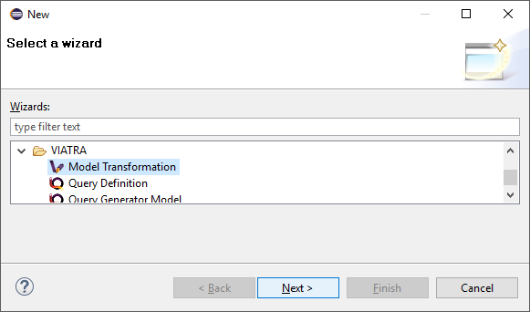
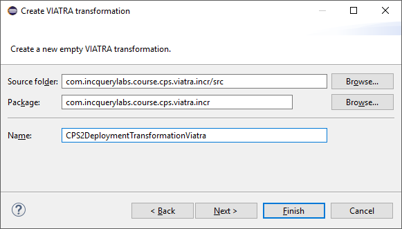
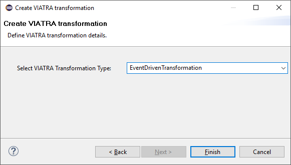
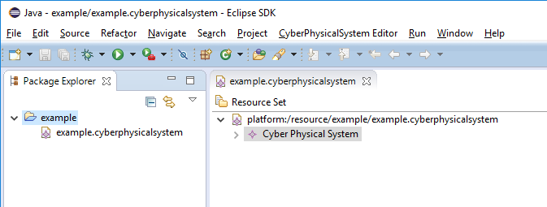
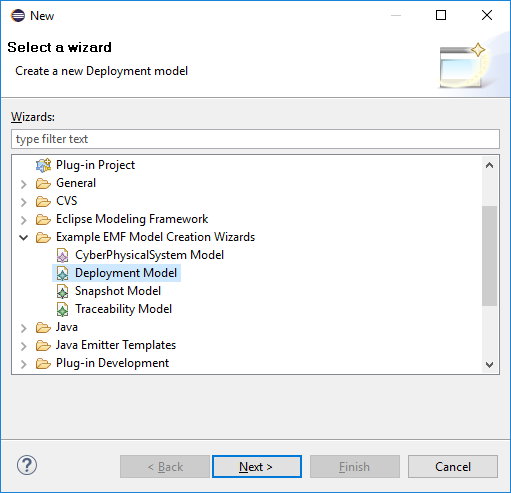
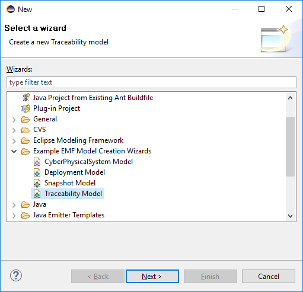
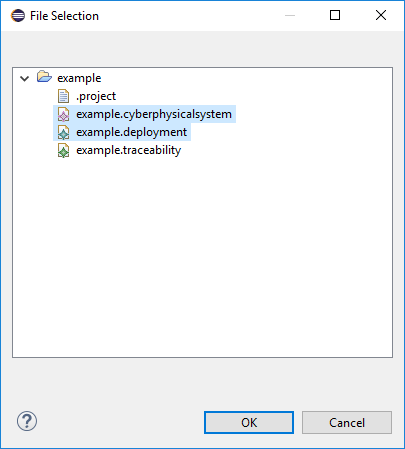
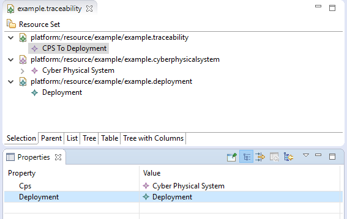
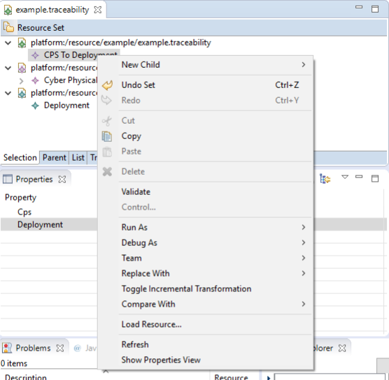

This exercise heps the audience to create a simple event-driven transformation using the VIATRA Transformation API. The transformation will create (and then incrementally update while active) a deployment model based on a CPS model. The exercise also covers registering a menu command which initializes the transformation.
Given the batch and event-driven transformations are really similar, this section focuses mainly on the differences; if required, consult the batch transformation tutorial.
Create transformation
Specific patterns have to be defined for event-driven rules; note that there are small differences to the batch definitions, e.g. there is an additional pattern called allocatedDeploymentApplication.
import "http://org.eclipse.viatra/model/cps"
import "http://org.eclipse.viatra/model/deployment"
import "http://org.eclipse.viatra/model/cps-traceability"
pattern hostInstance(hostInstance) {
HostInstance(hostInstance);
}
pattern applicationInstance(appType, appInstance){
HostInstance.applications(_, appInstance);
ApplicationType.instances(appType, appInstance);
}
pattern allocatedDeploymentApplication(depHost, depApp) {
DeploymentHost.applications(depHost, depApp);
}
pattern cps2depTrace(cps2dep, trace, cpsElement, depElement) {
CPSToDeployment.traces(cps2dep, trace);
CPS2DeploymentTrace.cpsElements(trace, cpsElement);
CPS2DeploymentTrace.deploymentElements(trace, depElement);
}-
Create transformation class (preferably Xtend)
-
Create new Model Transformation with the wizard
Figure 1. Model Transformation Wizard - Create new transformation-
Setup the name of the transformation and click Next
Figure 2. Model Transformation Wizard - Name of the new batch transformation -
Setup the type of the transformation to BatchTransformation and click Finish
Figure 3. Model Transformation Wizard - Type of the new transformation
-
-
-
Register used, domain-specific APIs as extensions, common APIs are already generated
/* * VIATRA Query group */ val extension CpsXformM2M cpsXformM2M = CpsXformM2M.instance /* * EMF metamodels */ val extension DeploymentPackage depPackage = DeploymentPackage::eINSTANCE val extension TraceabilityPackage trPackage = TraceabilityPackage::eINSTANCE -
Constructor will also initialize transformation (replace the generated one)
-
It assumes that the output and trace models are already created
-
The IModelManipulations implementation is used to make model access replaceable, this way the same transformation may be used for cases where the resource set is transactional
val CPSToDeployment cps2dep new(CPSToDeployment cps2dep, ViatraQueryEngine engine) { this.cps2dep = cps2dep this.resource = cps2dep.deployment.eResource this.engine = engine prepare(engine) createTransformation }
-
-
Transformation will remain active until dispose is called (a
disposemethod is already generated) -
Create a rule to create DeploymentHosts for each HostInstances
-
The EventDrivenTransformationRuleFactory extension provides a builder API for rule definition
-
A VIATRA query pattern is used as precondition to the rule, which means the rule will be activated each time the given pattern changes allowing to update the output accordingly.
val hostRule = createRule.precondition(HostInstanceMatcher.querySpecification)
-
-
Add action for each kind of changes in the pattern to update trace and output models:
-
upon creation of a HostInstance
.action(CRUDActivationStateEnum.CREATED) [ val hostinstance = hostInstance val nodeIp = hostInstance.nodeIp println('''Mapping host with IP: «nodeIp»''') /* Create new DeploymentHost element in output model */ val host = cps2dep.deployment.createChild(deployment_Hosts, deploymentHost) => [ set(deploymentHost_Ip, nodeIp) ] /* Create trace entry */ cps2dep.createChild(CPSToDeployment_Traces, CPS2DeploymentTrace) => [ addTo(CPS2DeploymentTrace_CpsElements, hostinstance) addTo(CPS2DeploymentTrace_DeploymentElements, host) ] ] -
upon the change of a HostInstance
.action(CRUDActivationStateEnum.UPDATED) [ /* find associated DeploymentHost element */ val depHost = engine.cps2depTrace .getOneArbitraryMatch(cps2dep, null, hostInstance, null) .depElement as DeploymentHost val hostIp = depHost.ip println('''Updating mapped host with IP: «hostIp»''') /* update IP attribute */ val nodeIp = hostInstance.nodeIp depHost.set(deploymentHost_Ip, nodeIp) println('''Updated mapped host with IP: «nodeIp»''') ] -
upon the removal of a HostInstance
.action(CRUDActivationStateEnum.DELETED) [ /* Find trace element */ val traceMatch = engine.cps2depTrace .getOneArbitraryMatch(cps2dep, null, hostInstance, null) val hostIp = hostInstance.nodeIp println('''Removing host with IP: «hostIp»''') /* Remove DeploymentHost element */ cps2dep.deployment.remove(deployment_Hosts, traceMatch.depElement) /* Remove trace */ cps2dep.remove(CPSToDeployment_Traces, traceMatch.trace) println('''Removed host with IP: «hostIp»''') ] -
Add default activation lifecycle then build the rule:
-
The lifecycle defines the state machine used to determine the possible states on which transition actions can defined.
.addLifeCycle(Lifecycles.getDefault(true, true)).build
-
-
-
The rule which create DeploymentApplication elements for ApplicationInstances, looks similar
val applicationRule = createRule.precondition(ApplicationInstanceMatcher.querySpecification) .action(CRUDActivationStateEnum.CREATED) [ /* Find associated DeploymentHost for the HostInstance this application is allocated to */ val depHost = engine.cps2depTrace.getAllValuesOfdepElement(null, null, appInstance.allocatedTo).filter( DeploymentHost).head val appinstance = appInstance val appId = appInstance.identifier println('''Mapping application with ID: «appId»''') /* Create DeploymentApplication application in host */ val app = depHost.createChild(deploymentHost_Applications, deploymentApplication) => [ set(deploymentApplication_Id, appId) ] /* create trace entry */ cps2dep.createChild(CPSToDeployment_Traces, CPS2DeploymentTrace) => [ addTo(CPS2DeploymentTrace_CpsElements, appinstance) addTo(CPS2DeploymentTrace_DeploymentElements, app) ] println('''Mapped application with ID: «appId»''') ].action(CRUDActivationStateEnum.UPDATED) [ /* find associated DeploymentApplication */ val depApp = engine.cps2depTrace.getOneArbitraryMatch(cps2dep, null, appInstance, null). depElement as DeploymentApplication /* Update ID */ if (depApp.id != appInstance.identifier) depApp.set(deploymentApplication_Id, appInstance.identifier) ].action(CRUDActivationStateEnum.DELETED) [ /* find associated DeploymentApplication */ val trace = engine.cps2depTrace.getAllValuesOftrace(null, appInstance, null).head as CPS2DeploymentTrace val depApp = trace.deploymentElements.head as DeploymentApplication /* Remove application from host */ engine.allocatedDeploymentApplication.getAllValuesOfdepHost(depApp).head.remove(deploymentHost_Applications, depApp) /* Remove traces */ cps2dep.remove(CPSToDeployment_Traces, trace) ].addLifeCycle(Lifecycles.getDefault(true, true)).build -
Replace the generated
createTransformationusing the rules defined above-
For cases when it is possible to have more than one rules activated (e.g. a new HostInstance is added to the model with already set allocated applications) a conflict resolver is used to provide a fixed ordering of rules to be executed.
-
We use a priority-based resolver (lower priority rules will be executed first), which considers priority of disappearing rules to be inverted (a disappearing application’s priority will be -2)
private def createTransformation() { //Initialize model manipulation API this.manipulation = new SimpleModelManipulations(engine) //Initialize event-driven transformation val fixedPriorityResolver = new InvertedDisappearancePriorityConflictResolver fixedPriorityResolver.setPriority(hostRule.ruleSpecification, 1) fixedPriorityResolver.setPriority(applicationRule.ruleSpecification, 2) transformation = EventDrivenTransformation.forEngine(engine) .setConflictResolver(fixedPriorityResolver) .addRule(hostRule) .addRule(applicationRule) .build }
-
Creating a menu command to execute the transformation
-
Create UI plugin
-
Add dependencies:
MANIFEST.MForg.eclipse.ui, com.incquerylabs.course.cps.viatra.incr;bundle-version="0.1.0", org.eclipse.viatra.examples.cps.traceability;bundle-version="0.1.0", org.eclipse.viatra.query.runtime;bundle-version="1.2.0" -
Create handler implementations:
ToggleTransformationHandler.javapublic class ToggleTransformationHandler extends AbstractHandler implements IHandler { ViatraQueryEngine engine; CPS2DeploymentTransformationViatra transformation; /* (non-Javadoc) * @see org.eclipse.core.commands.IHandler#execute(org.eclipse.core.commands.ExecutionEvent) */ @Override public Object execute(ExecutionEvent event) throws ExecutionException { IStructuredSelection selection = (IStructuredSelection) HandlerUtil.getCurrentSelection(event); CPSToDeployment tracemodel = (CPSToDeployment) selection.getFirstElement(); if(transformation == null) { if(engine == null) { try { engine = ViatraQueryEngine.on( new EMFScope( tracemodel.eResource() .getResourceSet())); transformation = new CPS2DeploymentTransformationViatra(tracemodel, engine); } catch (ViatraQueryException e) { throw new ExecutionException(e.getMessage(), e); } } } else { transformation.dispose(); } return null; } } -
Register handler in the context menu of "CPSToDeployment" elements
plugin.xml<extension point="org.eclipse.ui.commands"> <command defaultHandler="com.incquerylabs.course.cps.viatra.incr.ui.ToggleTransformationHandler" id="com.incquerylabs.course.cps.viatra.incr.ui.command" name="Toggle Transformation"> </command> </extension> <extension point="org.eclipse.ui.menus"> <menuContribution allPopups="false" locationURI="popup:org.eclipse.ui.popup.any?after=additions"> <command commandId="com.incquerylabs.course.cps.viatra.incr.ui.command" label="Toggle Incremental Transformation" style="push"> <visibleWhen checkEnabled="false"> <with variable="selection"> <count value="1"> </count> <iterate> <adapt type="org.eclipse.viatra.examples.cps.traceability.CPSToDeployment"> </adapt> </iterate> </with> </visibleWhen> </command> </menuContribution> </extension>
Executing the transformation
-
Launch runtime eclipse
-
Create a generic resource project
-
Copy a
.cyberphysicalsystemresource in itFigure 4. Project with a .cyberphysicalsystem resource -
Create an empty Deployment model
-
Root element shall be Deployment
Figure 5. New Deployment Model
-
-
Create a Traceability model
-
Root element shall be "CPS To Deployment"
Figure 6. New Traceability Model
-
-
In the Traceability editor, load both CPS and Deployment models with "Load Resources.." in the context menu
Figure 7. Load necessary resources into the Traceability Model -
Set CPS and Deployment references of traceability model in the properties view
Figure 8. Set the references of the Traceability Model -
Toggle transformation using the created command (on the context menu of the Traceability model root)
Figure 9. Toggle transformation in the context menu -
Initial activation done on first modification of the input model, e.g. create a new HostType
References
-
VIATRA Transformation API: https://wiki.eclipse.org/VIATRA/Transformation/Transformation_API
-
Further transformation examples: https://wiki.eclipse.org/VIATRA/Transformation/Examples